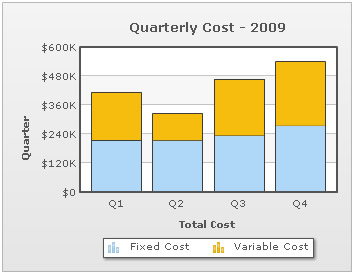
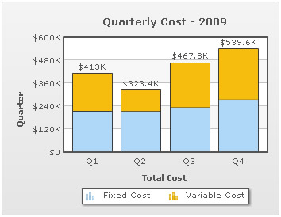
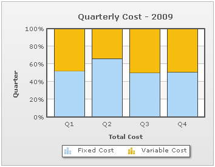
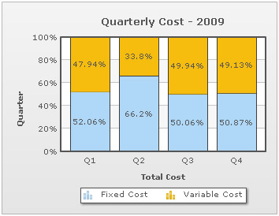
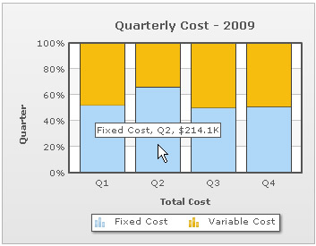
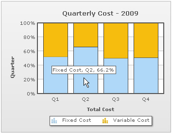

| XML/JSON Attributes for Stacked Charts |
Stacked charts help in displaying the cumulative magnitude of two or more data series. They help in representing a data value as a sum of two or more values. Each data series can be distinguished by the color of its section in the stack. The following example shows the total quarterly cost as sum of fixed cost and variable cost: XML/JSON for the above chart is shown below:
<chart showvalues="0" caption="Quarterly Cost - 2009" numberprefix="$" xaxisname="Total Cost" yaxisname="Quarter" plotgradientcolor="" >
<categories>
<category label="Q1"/>
<category label="Q2"/>
<category label="Q3"/>
<category label="Q4"/>
</categories>
<dataset seriesName="Fixed Cost">
<set value="215000"/>
<set value="214100"/>
<set value="234200"/>
<set value="274500"/>
</dataset>
<dataset seriesName="Variable Cost">
<set value="198000"/>
<set value="109300"/>
<set value="233600"/>
<set value="265100"/>
</dataset>
</chart>{
"chart":{
"showvalues":"0",
"caption":"Quarterly Cost - 2009",
"numberprefix":"$",
"xaxisname":"Total Cost",
"yaxisname":"Quarter",
"plotgradientcolor":""
},
"categories":[{
"category":[{
"label":"Q1"
},
{
"label":"Q2"
},
{
"label":"Q3"
},
{
"label":"Q4"
}
]
}
],
"dataset":[{
"seriesname":"Fixed Cost",
"data":[{
"value":"215000"
},
{
"value":"214100"
},
{
"value":"234200"
},
{
"value":"274500"
}
]
},
{
"seriesname":"Variable Cost",
"data":[{
"value":"198000"
},
{
"value":"109300"
},
{
"value":"233600"
},
{
"value":"265100"
}
]
}
]
} |
Displaying the cumulative sum of stacked data In order to display the cumulative sum of each stacked dataplot in your chart, you must declare the showSum attribute of the <chart> element. <chart showSum= '1' ...> This will yield the following output:  |
| Showing percentage distribution in stacked charts |
Percentage distribution can be shown instead of actual values in a stacked chart. The chart can automatically calculate the relative percentage of a value with respect to the cumulative sum of all values belonging to the corresponding category. This feature can be enabled by declaring the stack100Percent attribute of the chart element. <chart stack100Percent = '1' > The following image shows the proportional contribution of fixed and variable cost to the quarterly costs for the year 2009.  If the chart is set to plot percentage distribution, then data values will also be displayed as percentage. Data values are shown only when showValues attribute has been declared <chart showValues='1' ...>  It is however possible to display absolute values even if the chart is configured to plot percentage distribution. This is done by declaring the showPercentValues attribute in the following way. <chart showValues ="1" stack100Percent = "1" showPercentValues = "0" > Absolute data values are displayed in the tooltip at all times even when the chart is configured to show percentage distribution. To show percentage values in tooltips declare showPercentInToolTip attribute in the following way. <chart stack100Percent = "1" showPercentInToolTip = "1" >  |